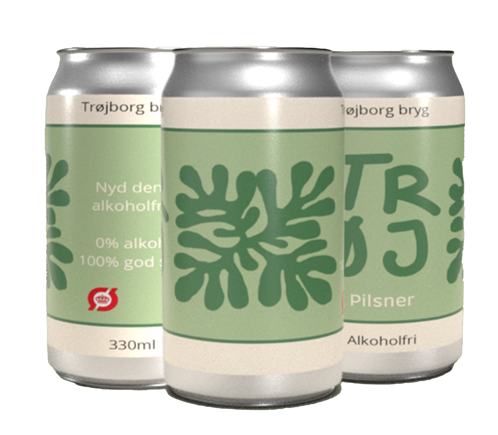

PILSNER

Alkoholfri pilsner er en forfriskende ølvariant, der leverer den karakteristiske smag og aroma af traditionel pilsner.
Denne øl er skabt med omhu for at bevare den velkendte bitterhed og lette maltsmag, som kendetegner pilsnerstilen.
Med en gylden farve og en klar konsistens byder denne pilsner på en behagelig oplevelse for dem, der foretrækker et alkoholfri alternativ uden at gå på kompromis med den autentiske pilsnersmag.